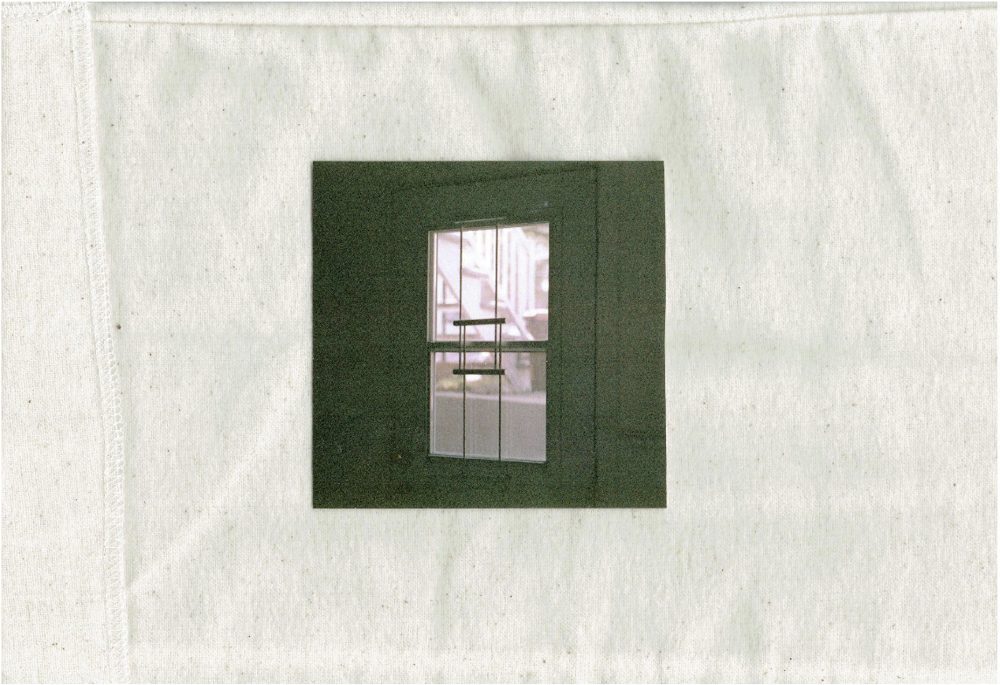
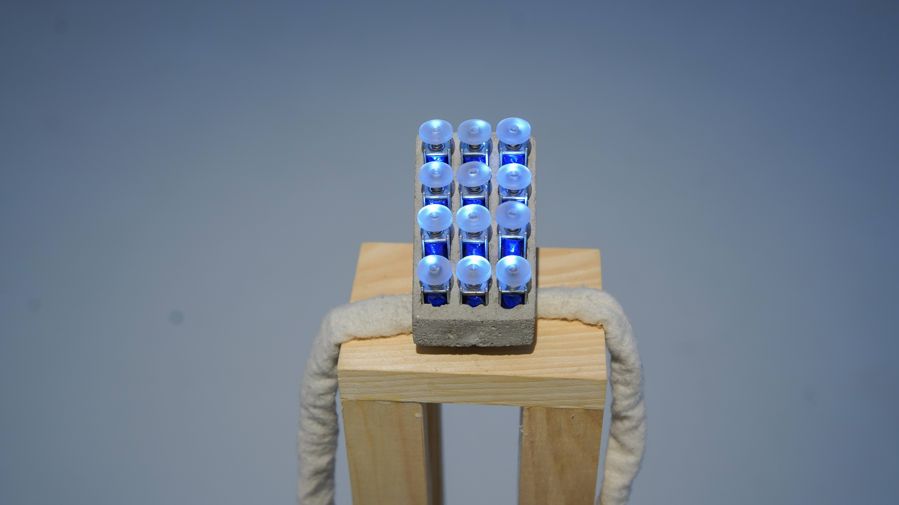
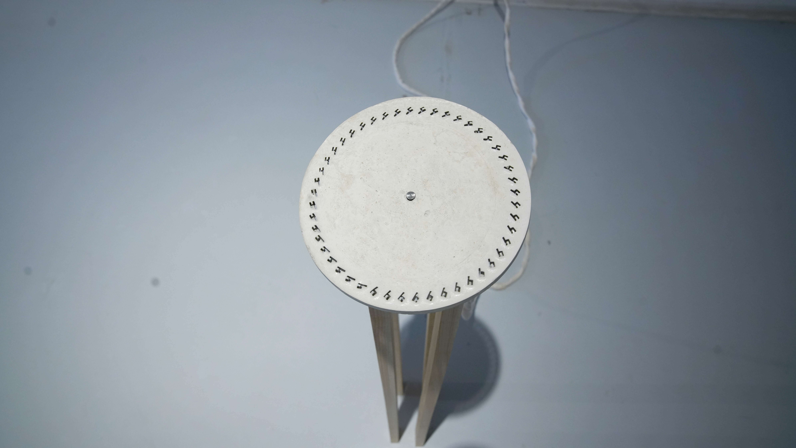
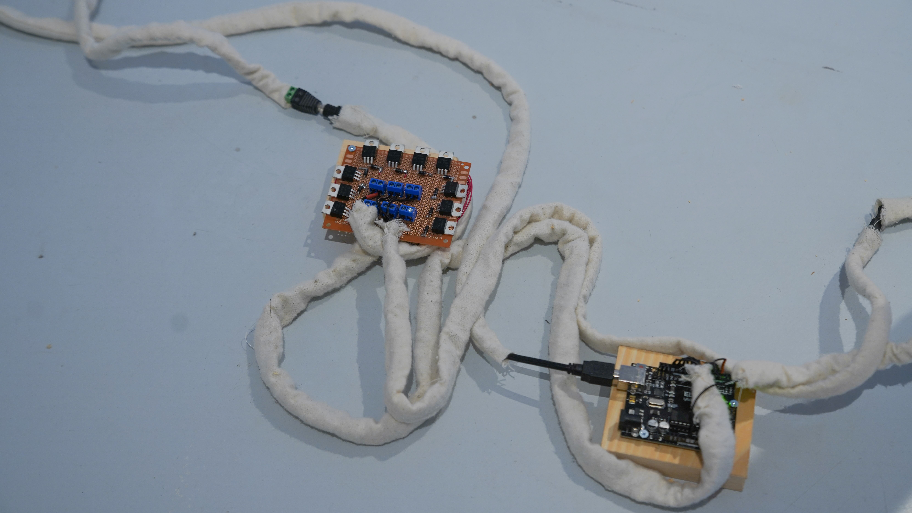

PORTFOLIO






regarder dehors implique d'être à l'intérieur
L’exposition « Regarder dehors implique d’être à l’intérieur » a été conçue à travers les mémoires et les matières de l'enfance, de l’espace domestique et du deuil. Façonnées depuis les matériaux de la fondation d’une maison, les œuvres qui la composent sont extraites d’une scène: celle de la maison vidée, quittée, puis revisitée par le rêve. Un ailleurs quelque part entre deux mondes.
photos par Cristo Riffo